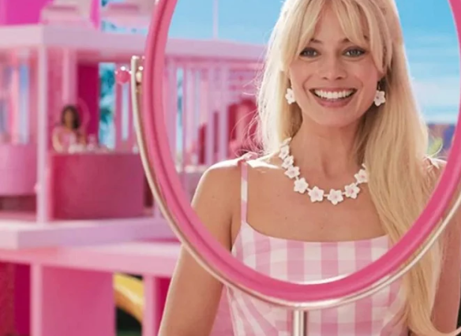

O filme Barbie (2023) conta a história de uma Barbie que, após uma crise existencial, é expulsa da Barbielândia e vai viver no mundo real. A protagonista, interpretada por Margot Robbie, precisa lidar com as dificuldades de não ser mais apenas uma boneca e, ao lado do Ken, interpretado por Ryan Gosling, enfrenta vários momentos até descobrir que a verdadeira beleza está dentro de cada um
A história da Barbie começa com a ideia de Ruth Handler, uma empreendedora feminista norte-americana, de criar uma boneca adulta para representar as aspirações das meninas. A inspiração surgiu ao observar a filha Bárbara brincando com bonecas de papel e imaginando papéis adultos para elas. Ruth percebeu que as meninas não estavam fingindo ser crianças ou mães, mas sim fingindo ser bibliotecárias e professoras
A Barbie foi lançada em março de 1959. A primeira boneca Barbie foi fabricada no Japão, com as roupas costuradas à mão. A Barbie foi comercializada como “Modelo de Moda para Adolescentes”, com roupas criadas pela estilista da Mattel Charlotte Johnson.